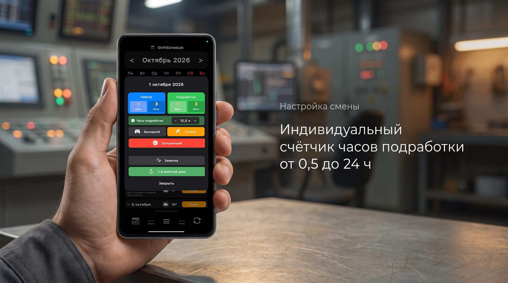
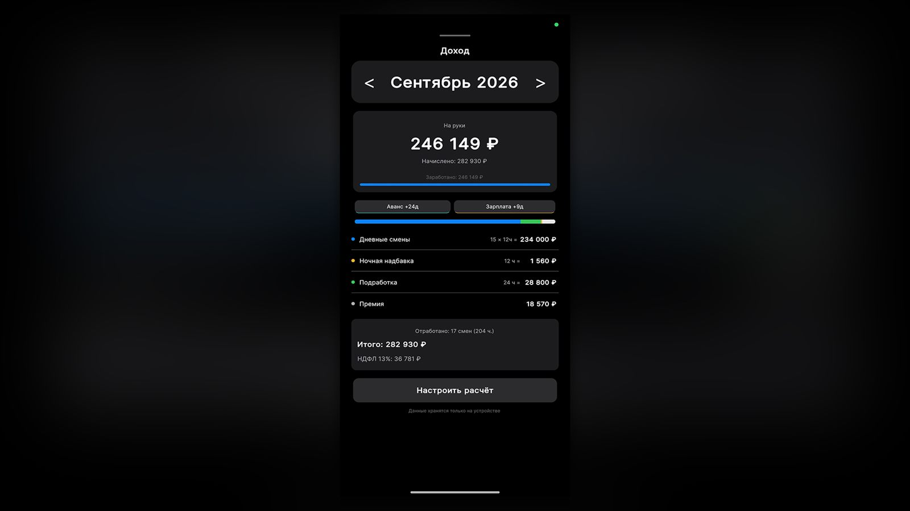

Практическое руководство по расчёту сменных подработок, контролю ночных надбавок по ст. 154 ТК РФ и автоматической проверке расчётного листка.
Каждый, кто работает по сменному графику — на промышленных предприятиях, в охране, складской логистике, транспорте или медицине — регулярно выходит на подработки. Необходимость подменить заболевшего напарника, остаться на пересменку или закрыть авральный участок в свой законный выходной — обычная практика сменного труда.
Однако в день выдачи зарплаты многие сменщики сталкиваются с неприятным сюрпризом: фактическая сумма в расчётном листке оказывается заметно ниже той, на которую рассчитывал работник. Разница может достигать от 3 000 до 15 000 рублей за один расчётный период.
В этой статье разберём, почему возникают ошибки при начислении оплаты за подработки, как защитить свои трудовые доходы и как автоматизировать учёт смен с точностью до получаса.
3 главные причины потери денег при сменных подработках
1. Человеческий фактор и устные договорённости
Подработка чаще всего возникает стихийно: бригадир или начальник смены устно просит остаться или выйти вне графика, обещая «закрыть всё по наряду». Спустя месяц при составлении табеля мастер банально забывает точное количество часов или ошибочно проставляет стандартную 8-часовую смену вместо фактически отработанных 12 часов. Доказать устную договорённость задним числом практически невозможно.
2. Дробная длительность сверхурочных выходов
В отличие от стандартной смены (8, 11 или 12 часов), подработки имеют плавающую продолжительность:
- остался закрыть поломку на 4,5 часа;
- вышел на усиление на 6 часов;
- задержка пересменки на 1,5 часа;
- полная дополнительная смена на 12,5 часов.
При фиксации «по памяти» или в виде простых галочек в бумажном календаре работник к концу месяца теряет детализацию дробных часов.
3. Неучтённые ночные часы (ст. 154 ТК РФ)
Ключевая финансовая потеря сменщиков связана с ночным временем. Согласно статье 154 Трудового кодекса РФ, каждый час работы в ночное время (в период с 22:00 до 06:00) оплачивается в повышенном размере по сравнению с работой в нормальных условиях:
- минимальная государственная доплата составляет не менее 20% часовой тарифной ставки (оклада);
- на многих промышленных предприятиях коллективным договором установлена надбавка до 40%.
Если ночная подработка ошибочно проведена табельщиком как дневная, работник полностью лишается положенной по закону ночной надбавки.
Как правильно вести учёт подработок: пошаговый алгоритм
Для гарантированной защиты заработанных средств соблюдайте три правила:
-
1Ежедневная фиксация часов: заносите точное количество отработанных часов сразу после смены, не откладывая на выходные.
-
2Раздельный учёт дневных и ночных смен: чётко разделяйте смены, приходящиеся на ночное время, чтобы контролировать начисление надбавки.
-
3Автоматический расчёт перед получением расчётки: к моменту выдачи расчётного листка у вас на руках должен быть готовый расчёт: количество основных часов, часов подработок, сумма ночных и чистый доход «на руки» за вычетом НДФЛ 13%.
Автоматизация учёта подработок в ShiftSchedule 2.4.0
В версии ShiftSchedule 2.4.0 реализован специализированный инструментарий для сменщиков с подработками:
1. Индивидуальный счётчик часов в окне дня
Для любого дня в календаре можно активировать статус «Подработка» и с шагом в 0,5 часа задать точную продолжительность выхода (от 0,5 до 24 часов). Кнопки управления поддерживают плавное ускорение счёта при удержании и сопровождаются тактильным откликом.

2. Цветовая дифференциация дня и ночи
В сетке календаря дневные и ночные подработки визуально разделены:
- дневная подработка выделена чистым светлым тоном;
- ночная подработка отображается глубоким тёмным оттенком со значком полумесяца.
Это позволяет мгновенно оценить баланс нагрузок за весь месяц.
3. Вкладка «Доход» с расчётом ночных и налогов
Калькулятор доходов ShiftSchedule автоматически:
- рассчитывает базовый заработок по вашей тарифной ставке (если у вас почасовая оплата, выберите в настройках расчёта режим «₽/час» — тогда каждая подработка считается по её фактическим часам);
- отдельно начисляет оплату за подработки;
- начисляет ночную надбавку на часы ночных смен — процент задаёте сами (по умолчанию 20%, как минимум по ТК РФ);
- вычитает подоходный налог (по умолчанию НДФЛ 13%, ставку можно изменить) и показывает точную сумму к выплате «на руки».

Вкладка «Доход» входит в пакет PRO — это разовая покупка навсегда без подписок, с бесплатным пробным периодом 14 дней. Календарь смен, умные цикловые будильники и счётчик часов подработки полностью бесплатны.
Все базовые функции планирования смен, умных цикловых будильников и счётчика часов работают локально на устройстве без обязательного подключения к интернету.
Учёт смен бригады и отчёты для руководства
Если помимо личного календаря смен вам требуется вести табель отработанного времени, фиксировать часы и выработку сотрудников или отправлять сменные отчёты руководству — используйте наше специализированное приложение Табель: Учёт смен и бригад.
ShiftSchedule — бесплатно для Android
Отмечайте подработки с точностью до получаса, различайте дневные и ночные выходы и сверяйте расчётный листок во вкладке «Доход».
Скачать в RuStore Скачать на GitHub